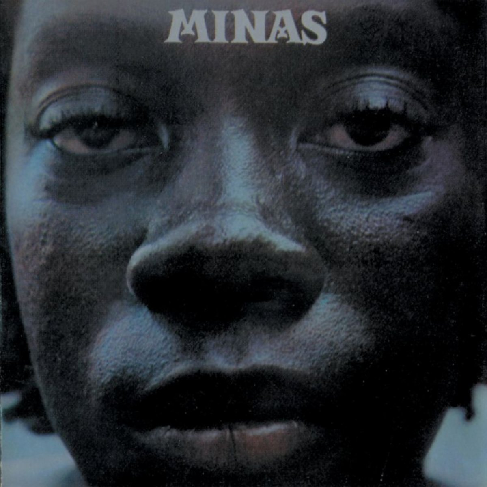

Minas (1975)
Milton Nascimento
"I think...I think you're a bit too close to the camera, Milton..."
(instrumental)
00:15
I no longer ask where the road goes
Agora não pergunto mais aonde vai a estrada
00:22
I no longer wait for that madrugada
Agora não espero mais aquela madrugada
00:30
It'll be, It'll be, It'll have to be, It'll be a sharp knife
Vai ser, vai ser, vai ter de ser, vai ser faca amolada
00:37
The blind glow of passion and faith, sharp knife
O brilho cego de paixão e fé, faca amolada
00:45
To let your light glow and be very peaceful
Deixar a sua luz brilhar e ser muito tranquilo
00:52
To let your love grow and be very peaceful
Deixar o seu amor crescer e ser muito tranquilo
01:00
Glow, glow, happen, glow, sharp knife
Brilhar, brilhar, acontecer, brilhar, faca amolada
01:07
Brother, sister, sister, brother in faith, sharp knife
Irmão, irmã, irmã, irmão de fé, faca amolada
(instrumental)
01:47
To plant the wheat and redo the daily bread
Plantar o trigo e refazer o pão de cada dia
01:51
(To plant the wheat and redo the daily bread)
(Plantar o trigo e refazer o pão de todo dia)
01:54
To drink the wine and be reborn in the daily light
Beber o vinho e renascer na luz de todo dia
01:58
(To drink the wine and be reborn in the daily light)
(Beber o vinho e renascer na luz de cada dia)
02:02
The faith, the faith, passion and faith, the faith, sharp knife
A fé, a fé, paixão e fé, a fé, faca amolada
02:09
The floor, the floor, the salt of the earth, the floor, sharp knife
O chão, o chão, o sal da terra, o chão, faca amolada
02:16
To let your light glow in the daily bread
Deixar a sua luz brilhar no pão de todo dia
02:24
To let your love grow in the daily light
Deixar o seu amor crescer na luz de cada dia
02:31
It'll be, it'll be, it'll have to be, it'll be very peaceful
Vai ser, vai ser, vai ter de ser, vai ser muito tranquilo
02:39
The blind glow of passion and faith, sharp knife
O brilho cego de paixão e fé, faca amolada
00:17
You know, I don't put much faith in my insanity
Sabe, eu não faço fé nessa minha loucura
00:24
And I say
E digo
00:28
I don't like those that ruin me to pieces
Eu não gosto de quem me arruina em pedaços
00:35
And only God knows of you
E Deus é quem sabe de ti
00:41
And I don't deserve a shattered kiss
E eu não mereço um beijo partido
00:48
Today is nothing more than a day lost in time
Hoje não passa de um dia perdido no tempo
00:55
And I stay
E fico
00:59
Far away from everything I know
Longe de tudo o que sei
01:01
No one speaks of this anymore, I know
Não se fala mais nisso, eu sei
01:07
I'll be for you what doesn't concern me
Eu serei pra você o que não me importa saber
01:18
Today is nothing more that a vase broken in my chest
Hoje não passa de um vaso quebrado no peito
01:24
And I yell
E grito
01:37
Look, the shattered kiss
Olha o beijo partido
01:43
Where is the queen that lucidity hid? Hid?
Onde estará a rainha que a lucidez escondeu? Escondeu?
02:28
Today is nothing more than a vase broken in my chest
Hoje não passa de um vaso quebrado no peito
02:33
And I yell, brother
E grito, irmão
02:46
Look, the shattered kiss
Olha o beijo partido
02:51
Where is the queen that lucidity hid? Hid?
Onde estará a rainha que a lucidez escondeu? Escondeu?
"Panair do Brasil" was a pioneering airline in Brazil, founded in 1929, being the main airline in the country from the 30s to the 50s. It closed down in 1965, in part due to pressure from the military dictatorship.
00:21
There came the tram
Lá vinha o bonde
00:23
Up and down the hill
No sobe desce ladeira
00:28
And the driver
E o motorneiro
00:30
Stopped the orchestra for a minute
Parava a orquestra um minuto
00:34
To tell me stories of the Italian campaign
Para me contar casos da campanha da Itália
00:39
And the bullet he didn't take
E do tiro que ele não levou
00:43
I got an immense fright
Levei um susto imenso
00:46
On the wings of Panair
Nas asas da Panair
00:49
I discovered that things change
Descobri que as coisas mudam
00:52
And that everything is small
E que tudo é pequeno
00:55
On the wings of panair
Nas asas da Panair
01:00
And there goes the boy
E lá vai menino
01:02
Cursing at priest and stone
Xingando padre e pedra
01:06
And there goes the boy
E lá vai menino
01:08
Licking rotten delights
Lambendo podre delícia
01:12
And there goes the boy
E lá vai menino
01:15
Lord over every fruit
Senhor de todo fruto
01:18
Without sin, without fright
Sem nenhum pecado sem pavor
01:21
Fear, in my life
O medo em minha vida
01:24
Would only be born much later
Nasceu muito depois
01:27
I discovered that my weapon
Descobri que minha arma
01:30
Is what I have memorized
É o que a memória guarda
01:33
Of the times of Panair
Dos tempos da Panair
01:38
Nothing sad
Nada de triste
01:40
Exists that can't be forgotten
Existe que não se esqueça
01:43
Someone insists and speaks to the heart
Alguém insiste e fala ao coração
01:50
Everything sad exists
Tudo de triste existe
01:53
And is not forgotten
E não se esquece
01:55
Someone insists and wounds their heart
Alguém insiste
02:02
Nothing new
Nada de novo
02:04
Exists in this plane
Existe nesse planeta
02:07
That is not spoken about
Que não se fale
02:09
Here on this bar table
Aqui na mesa de bar
02:15
And that fight and that hunger for football
E aquela briga
02:21
And that tango and that lady of the night
E aquele tango e aquela dama da noite
02:27
And that stain and the hidden words
E aquela mancha e a fala oculta
02:32
That died on the back of the backyard
Que no fundo do quintal morreu
02:34
I died each day
Morri a cada dia
02:38
Of the days I lived
Dos dias que eu vivi
02:41
The beer I drink today
Cerveja que tomo hoje
02:44
Is only in memory
É apenas em memória
02:47
Of the times of Panair
Dos tempos da Panair
02:50
My first coca-cola
A primeira coca-cola
02:53
It was, I well remember now
Foi, me lembro bem agora
02:56
On the wings of Panair
Nas asas da Panair
02:59
The greatest of wonders
A maior das maravilhas
03:02
Was flying over the world
Foi voando sobre o mundo
03:05
On the wings of Panair
Nas asas da Panair
03:24
Around this table, old men and young men
Em volta dessa mesa velhos e moços
03:28
Remembering what once was
Lembrando o que já foi
03:30
Around this table, there exist others
Em volta dessa mesa existem outras
03:33
Talking so similarly
Falando tão igual
03:36
Around this tables, there exists the street
Em volta dessas mesas existe a rua
03:39
Living its normal
Vivendo seu normal
03:41
Around this street, a city
Em volta dessa rua uma cidade
03:45
Dreaming its metals
Sonhando seus metais
03:47
Around the city...
Em volta da cidade...
This song might possibly reference the 1961 "Gran Circus Norte Americano tragedy," where a disgruntled ex-employee of the circus, as revenge for being fired, started a fire that killed many of the people performing and in the audience. Of note is the imagery of the canvas, which had been widely advertised as being made of nylon, when, in reality, it was a far more flammable cotton fabric.
00:38
In comes the dirty canvas
Vem chegando a lona suja
00:41
The great human circus
O grande circo humano
00:45
With the hunger of the clown
Com a fome do palhaço
00:46
And the crazed ballerina
E a bailarina louca
00:50
Let's celebrate
Vamos festejar
00:52
The rib that will be broken
A costela que vai se quebrar
00:56
It's silly, on the trapeze
No trapézio é bobagem
00:58
The lesser misery
A miséria pouca
01:02
Right in the middle of this ring
Bem no meio desse picadeiro
01:04
Will happen
Vão acontecer
01:07
Death, glory
Morte, glória
01:08
And surprises at the end of the story
E surpresas no final da história
01:13
Bread and circus, silver and moon
Pão e circo prata e lua
01:14
A smile will be drawn
Um sorriso vai se desenhar
01:19
On the bitter parts of this party
No amargo dessa festa
01:20
Along with this slag
Junto dessa escória
(instrumental)
02:08
Going up and down the mountain
Sobe e desce a montanha
02:10
The great human circus
O grande circo humano
02:13
On its back, on its meager shoulder
No seu lombo, no seu ombro magro
02:16
It carries, silver and moonlight
Carregando, prata e luar
02:20
The mystery will reveal itself
O mistério que vai se mostrar
02:24
On the wire
No arame
00:00
Balancing over the beaming sunlight
Equilíbrio sobre o sol raiando
02:30
Dream awaits the great human circus
Sonho espera o grande circo humano
02:35
Broken smile, human circus
Coração partido circo humano
"Ponta de Areia" (Sand Point) is a seaside district in the state of Bahia, having been one end of the Bahia-Minas Railroad, responsible for connecting the two states of Bahia and Minas Gerais. The railroad was deactivated in 1966.
01:19
Sand point
Ponta de areia
01:23
Last stop
Ponto final
01:28
Of the Bahia-Minas
Da Bahia-Minas
01:31
Natural road
Estrada natural
01:36
That connected Minas
Que ligava Minas
01:39
To the port, to the sea
Ao porto, ao mar
01:44
Iron path
Caminho de ferro
01:48
They had it torn out
Mandaram arrancar
01:52
The old conductor
Velho maquinista
01:55
With his cap
Com seu boné
02:00
Remembers the happy people
Lembra o povo alegre
02:03
That came to curtsy
Que vinha cortejar
02:39
The steam locomotive
Maria-fumaça
02:42
Doesn't sing anymore
Não canta mais
02:46
To the lady, to the flowers
Para a moça, as flores
02:50
Windows and backyards
Janelas e quintais
02:54
On the empty square
Na praça vazia
02:57
A yell, an "ouch"
Um grito, um ai
03:02
Forgotten houses
Casas esquecidas
03:05
Widows on the door frames
Viúvas nos portais
03:40
The steam locomotive
Maria-fumaça
03:43
Doesn't sing anymore
Não canta mais
03:47
To the lady, to the flowers
Para a moça, as flores
03:51
Windows and backyards
Janelas e quintais
03:55
On the empty square
Na praça vazia
03:58
A yell, an "ouch"
Um grito, um ai
04:02
Forgotten houses
Casas esquecidas
04:05
Widows on the door frames
Viúvas nos portais
01:11
The city is modern
A cidade é moderna
01:14
Said the blind man to his son
Dizia o cego a seu filho
01:16
His eyes full of dirt
Os olhos cheios de terra
01:20
The tram, off its tracks
O bonde fora dos trilhos
01:23
The adventure starts
A aventura começa
01:24
On the heart of the ships
No coração dos navios
01:30
Thought the son, silently
Pensava o filho calado
01:32
Thought the son, listening
Pensava o filho ouvindo
01:35
That the city is modern
Que a cidade é moderna
01:37
Thought the son, smiling
Pensava o filho sorrindo
01:41
And he was deaf and mute
E era surdo e era mudo
01:43
But he spoke and he listened
Mas que falava e ouvia
02:38
The city is modern
A cidade é moderna
02:40
Said the blind man to his son
Dizia o cego a seu filho
02:43
His eyes full of dirt
Os olhos cheios de terra
02:46
The tram, off its tracks
O bonde fora dos trilhos
02:50
The adventure starts
A aventura começa
02:51
On the heart of the ships
No coração dos navios
02:54
Thought the son, silently
Pensava o filho calado
02:56
Thought the son, listening
Pensava o filho ouvindo
02:59
That the city is modern
Que a cidade é moderna
03:02
Thought the son, smiling
Pensava o filho sorrindo
03:06
And he was deaf and mute
E era surdo e era mudo
03:08
But he spoke and he listened
Mas que falava e ouvia
04:04
The city is modern
A cidade é moderna
04:06
Said the blind man to his son
Dizia o cego a seu filho
00:18
Great, great is your courage, my love
Grande é grande a tua coragem, o teu amor
00:24
You are the fire, the wind, morning rain
Tu és o fogo, o vento, chuva da manhã
00:30
Go, don't light the crazy beast inside me
Vá, não acendas a fera doida que existe em mim
00:34
You are a woman, you take care of the house and the family
Tu és mulher, cuidas da casa e da família
00:39
But you're not from the stream
Mas não és da ribeira
00:46
You curse my life, you don't see
Amaldiçoas a minha vida, tu nao vês
00:52
That my destiny is that of a gypsy dreamer
Quem meu destino é de cigano sonhador
00:58
My boot, full of fear, silence and dust
A minha bota cheio de medo silêncio e pó
01:02
Carries on, goes on alone
Por aí segue caminho, segue sózinha
01:06
Dirty and true
Suja e verdadeira
01:20
Idolized friend destiny and woman
Idolatrada amiga destino e mulher
01:26
I had friends, I have friends, and friends I'll have
Amigos tive, amigos tenho e terei
01:32
At home, I am, I am what I am in the world
Eu sou em casa, eu sou no mundo o que eu sou
01:36
Don't you see that our life is our son
Tu não vês que nossa vida é nosso filho
01:41
The color of Brazil
Da cor brasileira
02:06
Come, come and be happy
Venha, venha ser feliz
02:09
Come, come and be happy
Venha, venha ser feliz
02:12
Come, come and be happy
Venha, venha ser feliz
02:15
Come, come and be happy
Venha, venha ser feliz
00:07
It's life, life, a playful love, truly
Êh, vida, vida, que amor brincadeira, à vera
00:10
The loved each other in any way, truly
Eles se amaram de qualquer maneira, à vera
00:14
Any way of loving is worth it
Qualquer maneira de amor vale à pena
00:17
Any way of loving is worth loving
Qualquer maneira de amor vale amar
00:20
Shame, what a shame, what a beautiful thing, say
Pena, que pena, que coisa bonita, diga
00:24
What was the word that was never said, say
Qual a palavra que nunca foi dita, diga
00:27
Any way of loving is worth that
Qualquer maneira de amor vale aquela
00:30
Any way of loving is worth loving
Qualquer maneira de amor vale amar
00:34
Any way of loving is worth it
Qualquer maneira de amor vale à pena
00:37
Any way of loving will count
Qualquer maneira de amor valerá
00:54
They started on other matters, many
Eles partiram por outros assuntos, muitos
00:57
But in my corner they'll always be together, very
Mas no meu canto estarão sempre juntos, muito
01:00
Any way I sing thing son
Qualquer maneira que eu cante esse canto
01:03
Any way is worth singing
Qualquer maneira me vale cantar
01:07
They love each other in any way, truly
Eles se amam de qualquer maneira, à vera
01:10
They love each other for their whole lives, truly
Eles se amam é pra vida inteira, à vera
01:13
Any way of loving is worth a song
Qualquer maneira de amor vale o canto
01:16
Any way of loving is worth singing
Qualquer maneira me vale cantar
01:20
Any way of loving is worth that
Qualquer maneira de amor vale aquela
01:23
Any way of loving will count
Qualquer maneira de amor valerá
01:29
Shame, what a shame, what a beautiful thing, say
Pena, que pena, que coisa bonita, diga
01:32
What was the word that was never said, say
Qual a palavra que nunca foi dita, diga
01:35
Any way of loving is worth a song
Qualquer maneira de amor vale o canto
01:38
Any way of loving is worth singing
Qualquer maneira de amor vale me vale cantar
01:41
Any way of loving is worth that
Qualquer maneira de amor vale aquela
01:45
Any way of loving will count
Qualquer maneira de amor valerá
00:46
Look
Olha
00:49
The bend of the river
A volta do rio
00:50
Turned to life
Virou a vida
00:55
The spring water
A água da fonte
00:57
Our sadness
Nossa tristeza
01:00
The sun on the horizon
O sol no horizonte
01:03
A wound
Uma ferida
01:24
Look
Olha
01:28
The gold of the mine
O ouro da mina
01:32
Turned to poison
Virou veneno
01:37
The blood on the earth
O sangue na terra
01:40
Turned into a toy
Virou brinquedo
01:44
And that child
E aquela criança
01:46
Sitting there
Ali sentada